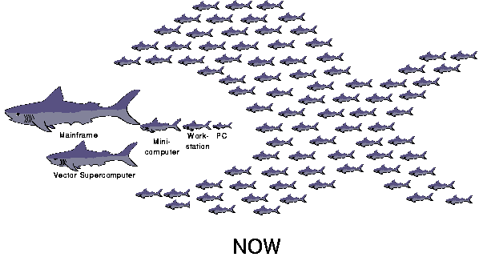

What can anyone give you greater than now" - William Stafford

What can anyone give you greater than now" - William Stafford
River is a data-flow programming environment and I/O substrate for clusters of computers. River is designed to provide maximum performance in the common case, even in the face of non-uniformities in hardware, software, and workload. River is based on two simple design features: a high-performance distributed queue, and a storage redundancy mechanism called graduated declustering. We have implemented a number of data-intensive applications on River, including database primitives such as sort, select, and hash-join, and are able to achieve near-ideal performance in a variety of non-uniform performance scenarios.
Contact: remzi@cs.berkeley.edu
Note: The project was terminated on June 15, 1998